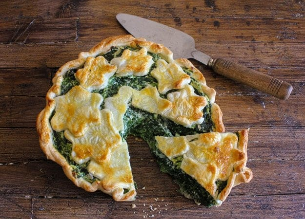

Sunny Spinach Pie Recipe

Sunny Spinach Pie
This spinach pie is a family favourite! Its savoury scent is bound to make your mouth water and your tastebuds jump for joy. My mom always made this on a cold winter day to warm us up and I hope your family will appreciate one of her favourites!
Ingredients
For the Dough
- 3 ½ cup/500 g of flour
- 1 tsp yeast
- ¼ cup olive oil
- 1 cup of warm dry white wine
- 2 tsp of salt
For the Stuffing
- 4 cups of sautee spinach with sauteed shallots/onions
- 350 gr of ricotta cheese.
- 2 egg yolks
- 100 g of grated Parmigiano Reggiano or Grana cheese
- a pinch of salt, pepper and spices
- breadcrumbs
Steps
- Mix all the ingredients for the dough and work the dough until it becomes uniform
- Cover it with plastic wrap while preparing the stuffing.
- Boil the spinach and squeeze it to eliminate the water.
- Mix it with the ricotta cheese.
- Add egg yolks
- Add the grated cheese, salt and pepper.
- Amalgamate
- Preheat the oven to 180°C/356°F.
- Divide the dough in two.
- Create 2 circles of 30cm/11.8in each using a rolling pin.
- Place the 1st dough circle on baking paper.
- Spread some breadcrumbs on it.
- Place part of the stuffing in the center of the circle and the remaining creating another circle around
- Cover it with the 2nd circle of dough.
- Wet the borders and attach one to another using a fork.
- Place a small bowl over the central stuffing and punch with a fork all around.
- Using a sharp knife cut the borders in 3cm/1.2in slices.
- Turn them upside 90°.
- Bake for 30 minutes in preheated oven at 180°C/356°F.
- Buon appetito!
Previous: Mom's Simple Scones
Main Page